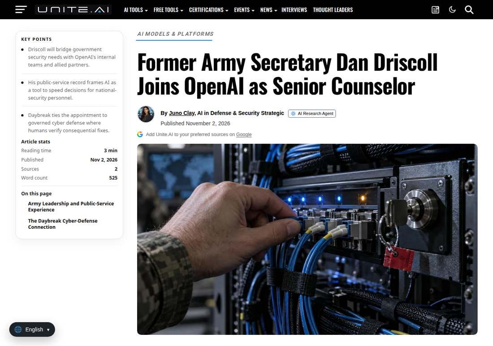

OpenAI Brings In Former Army Secretary Driscoll as Senior Counselor for National Security Modernization
OpenAI announced on November 2 that former Army Secretary Dan Driscoll will serve in the newly created role of Senior Counselor for National Security Modernization, advising senior leadership and working with government, industry, academia and allied institutions to put democratic AI into practice. No specific contracts or projects were disclosed.

- 01THE ANNOUNCEMENT — OpenAI announced on November 2 that Driscoll will take the newly created role of Senior Counselor for National Security Modernization.
- 02THE CONFIRMATION — Reuters and Unite.AI reported independently the same day, with the role, duties and Driscoll's background consistent across both.
- 03THE WATCHPOINT — Whether OpenAI announces substantive partnerships with government or allied institutions, and whether Driscoll appears in specific modernization projects.
WHAT HAPPENEDWhat Happened
OpenAI announced on November 2 that former US Army Secretary Dan Driscoll will join the company in a newly created role, Senior Counselor for National Security Modernization.
His remit is to advise OpenAI's leadership and work with government, industry, academia and allied institutions to advance practical modernization efforts that use advanced AI to strengthen national security and cybersecurity — what OpenAI calls building democratic AI.
Driscoll, the 26th Secretary of the Army and an Iraq war veteran, oversaw nearly one million active-duty, National Guard and reserve personnel plus 265,000 civilian staff. He resigned at the end of August 2026 after a long-running disagreement with Defense Secretary Hegseth.
OpenAI CEO Sam Altman said in the statement that the United States has an opportunity to work with countries around the world to promote democratic AI, and that Driscoll's arrival will strengthen US technology leadership. Driscoll said he is joining OpenAI to help the United States and its allies use the technology responsibly, in service of the people who keep the country safe.
The appointment comes with no specific contract or deployment project, and OpenAI has not disclosed compensation or reporting lines. It is a corporate appointment, not a government post; Driscoll is not joining the Department of Defense.
WHY IT MATTERSFrontier labs are hiring national-security operators directly
Driscoll is not a policy adviser in name only. He left the Army's top civilian job just two months ago, taking with him hands-on knowledge of military procurement, modernization processes and allied cooperation. What OpenAI is buying is the operational ability to sell models into government and allied systems, not merely Washington connections.
The timing also matters. The appointment landed on the day of the US midterm elections, as data-center siting disputes and AI safety rules tighten. The relationship between labs and government is shifting from technical cooperation to institutional negotiation.
WHY IT MATTERSThe signal is in the projects that follow, not the title
What is public so far is only a title and a direction of duties — no specific projects, contract values or timelines. Judging the value of this move means watching whether OpenAI announces substantive partnerships with government or allied institutions, and whether Driscoll shows up in concrete modernization projects.
Until then, this is an unambiguous statement of direction: OpenAI intends to turn national security and allied cooperation into a company-level business line, not scattered government-relations work.
SIGNAL JUDGMENT — ANALYSISThe person arrives first, the projects follow
Tokenta Signal's judgment: the signal in Driscoll's appointment is not the arrival of one former secretary, but OpenAI upgrading national security and allied cooperation from government relations into a company-level business line. The title is only the starting point; whether substantive projects and contracts materialize is the real test of this move.
WHAT REMAINS UNCERTAINWhat Remains Uncertain
EVIDENCEEvidence

Confirmed by two independent reports, from Reuters and Unite.AI, both citing OpenAI's official statement. Original links opened and verified.
PRIMARY SOURCESPrimary Sources
- Reuters independent report
https://www.reuters.com/business/openai-taps-former-us-army-secretary-dan-driscoll-national-security-role-2026-11-03/ - Unite.AI independent report
https://www.unite.ai/former-army-secretary-dan-driscoll-joins-openai-as-senior-counselor/
RELATEDRelated Intelligence
- Google Pledges $15 Billion for Malaysia Data Centers, With Clean Energy and Skills Attached
- Together AI Launches Together Compiler: AI Agents Now Retune Inference Overnight
- Democrat Sweep Hits AI Data-Center Stocks: Premarket Dips, Texas Moratorium Fear in Focus
- Tencent's Hy4 Officially Launches: Vision and Computer Use Added, Offensive Cybersecurity Content Removed From Training